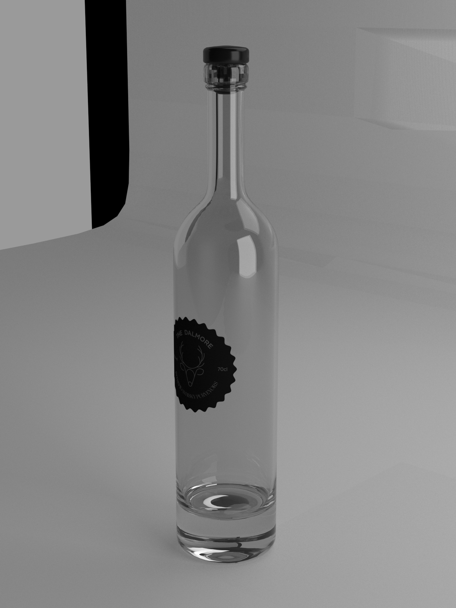

3D bottle — The Dalmore Sirius

Role
3D modelling, Label maps, Materials & lighting
Type
University project · Unofficial redesign
Year
2023 — 2024
Duration
3 months
With
Solo project
Tools
3ds Max, V-Ray, Illustrator
Developed within a 3D modelling course, this project covers the design and rendering of a premium glass bottle, from concept to final visualisation. The brief called for a glass bottle of our choice, modelled in 3D and dressed with label maps drawn in Illustrator. Before modelling, I reviewed a wide range of spirits packaging, comparing silhouettes, glass forms and label placement. I chose The Dalmore Sirius for the strength of its shape and for a brand whose identity I already admired.


Modelling the bottle. The bottle, cap and whisky were built as separate objects, so the liquid reads through the glass as liquid rather than as a coloured solid, and refraction behaves as it would on a real bottle.
I kept the brand's name and information and reworked the composition into a more minimal system of two pieces: a vertical strip running up the neck (1967 · The Dalmore · Single malt) and a round seal with the stag on the body. Both were drawn as flat vector artwork in Illustrator.


Mapping them onto the glass. The artwork was UV-mapped onto the curved surfaces in 3ds Max, so the labels follow the form of the neck and body, and rendered in V-Ray.


Going beyond the brief. With the core brief completed ahead of schedule, I set myself two further challenges. The first was condensation: small drops across the surface. A perfectly clean bottle reads as a render, and the drops break up the reflections the way a cold bottle does.
A scene instead of a studio. The second was placing the bottle on water that behaves like glass, at sunset. The surface reflects the colours of the sky, and the warm light picks up the amber of the whisky.
The project brought together the full packaging visualisation workflow in a single piece: vector label design, 3D modelling, materials, lighting and scene composition. Behind the final images are the lighting and modelling tests below, used to refine the shape of the bottle and to see how light moves through the glass before building the final scene.


